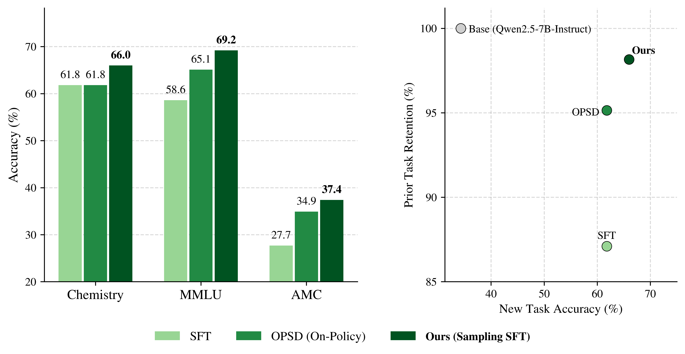
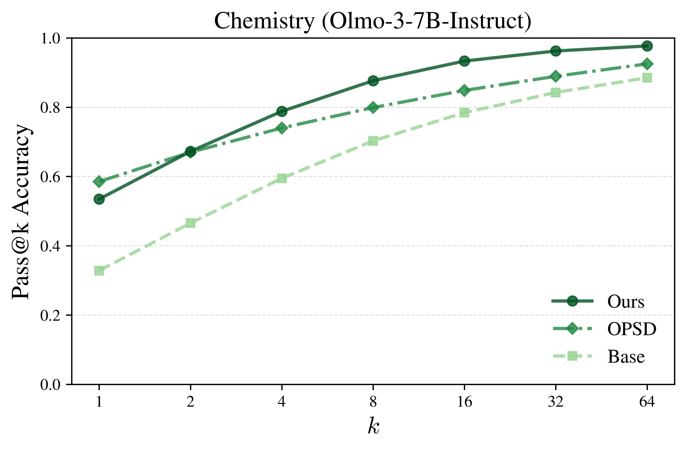

Introducing new capabilities to frontier models has long been the goal of posttraining, which predominantly employs supervised finetuning (SFT) and reinforcement learning (RL) to this end. Conventional wisdom dictates that RL enables strong generalization on new tasks without losing existing capabilities, while SFT is prone to weak generalization and catastrophic forgetting. At the same time, SFT can learn from off-policy expert data, whereas RL must rely on a model's ability to find successful trajectories with repeated sampling.
In our work, we seek to leverage the strength of on-policy learning while utilizing the privileged information contained in off-policy data. However, rather than modifying the learning objective to accommodate this data, we instead tailor the data distribution to better suit the learner. We introduce a Markov chain Monte Carlo (MCMC) sampling algorithm that progressively transforms off-policy traces to be more on-policy given a reference model for finetuning.
Across tasks like scientific skill acquisition, mathematical reasoning, and open-ended expertise, our sampling algorithm enables SFT to rival prevailing posttraining techniques, often generalizing better and forgetting less than strong on-policy baselines. In addition, the resulting finetuned models exhibit strong distributional performance and are capable of learning beyond sharpening the base model distribution. At a higher level, our approach presents sampling as a model-native operator that shapes data for learnability, offering broader utility as a general-purpose primitive throughout the posttraining stack.
On-Policy Learning
How do we introduce fundamentally new capabilities to a base model without forgetting existing ones?
RL has emerged as a clear favorite for posttraining, featuring strong generalization while leaving prior
abilities relatively intact. SFT, on the other hand, is widely regarded as a weak learner, memorizing instead of generalizing and exhibiting
catastrophic forgetting. Overwhelming evidence attributes this discrepancy to the observation that RL learns on-policy while SFT learns off-policy.
RL learns from rollouts generated from the learner's own distribution while SFT fits to traces that can be exceedingly different from a
typical rollout, resulting in drastic and unpredictable shifts in behavior.
Off-policy learning has one resounding advantage, however, which is the ability to leverage privileged information in constructing
target rollouts for learning. On-policy learning instead relies on the model's own ability to find successful trajectories by repeated sampling.
For truly novel tasks, though, the likelihood of this happening is effectively zero, yielding no learning signal at all. This further leaves learning
prone to distribution sharpening, where preexisting capabilities are strengthened and refined instead of new capabilities being added.
This motivates the foundational question of our work:
Can we algorithmically sample on-policy trajectories that remain faithful to privileged off-policy information for learning?
Projection Sampling
With the right formalism, we can actually explicitly write down an ideal sampling distribution for learning with privileged information. Privileged information can be represented as an information constraint \( \mathcal{C} \) over all trajectories, where some predetermined equivalence relation
determines whether a trajectory is consistent with \( \mathcal{C} \) or not. Consider the set of all distributions \( \mathcal{P}_\mathcal{C} \)
that have support \( \mathcal{C} \). Then we want to sample from the information projection:
\[p_{\mathcal{C}}
:=
\arg\min_{\pi \in \mathcal{P}_{\mathcal{C}}}
\mathrm{KL}\!\left(
\pi
\,\middle\|\,
p
\right) \implies p_{\mathcal{C}}(\mathbf{x}) \propto p(\mathbf{x}) \cdot \mathbf{1}\bigl(\mathbf{x} \in \mathcal{C}\bigr),\]
which is the distribution closest to base model policy \(p\) that is also consistent with \( \mathcal{C} \). Of course, one way to sample
from \(p_{\mathcal{C}}\) is via rejection sampling, but this is identical to the repeated sampling in on-policy learning. Instead, we employ a neat trick based
on the Metropolis-Hastings (MCMC) algorithm that enables us to use privileged information as an "initialization" that progressively becomes more
on-policy with more MCMC steps.
Toy schematic of traditional Metropolis-Hastings updates.
Metropolis-Hastings is an approximate sampler that iteratively updates a sample rollout \(\mathbf{x}\) by proposing an altered candidate
\(\mathbf{x'}\) with proposal distribution \(\kappa\), accepting updates with probability \(A(\mathbf{x}, \mathbf{x'})\) that depends on the
target distribution (in our case \(p_{\mathcal{C}}\)) via
\[A(\mathbf{x}, \mathbf{x'}) = \text{min} \left\lbrace 1, \frac{p_{\mathcal{C}}(\mathbf{x}) \cdot \kappa(\mathbf{x'} | \mathbf{x})}{p_{\mathcal{C}}(\mathbf{x'}) \cdot \kappa(\mathbf{x}|\mathbf{x'})}\right\rbrace = \text{min} \left\lbrace 1, \frac{p(\mathbf{x}) \cdot
\mathbf{1}\bigl(\mathbf{x} \in \mathcal{C}\bigr) \cdot \kappa(\mathbf{x'} | \mathbf{x})}{p(\mathbf{x'}) \cdot
\mathbf{1}\bigl(\mathbf{x'} \in \mathcal{C}\bigr) \cdot \kappa(\mathbf{x}|\mathbf{x'})}\right\rbrace = \text{min} \left\lbrace 1, \frac{p(\mathbf{x}) \cdot \kappa_{\mathcal{C}}(\mathbf{x'} | \mathbf{x})}{p(\mathbf{x'}) \cdot \kappa_{\mathcal{C}}(\mathbf{x}|\mathbf{x'})}\right\rbrace.\]
In the expression for \(A(\mathbf{x}, \mathbf{x'})\), note that we can absorb the information constraint into the proposal instead of the target distribution, allowing us to use it in-context to
generate MCMC candidates. In other words, MCMC sampling from \(p_{\mathcal{C}}\) is equivalent to MCMC sampling from \(p\) with restricted proposals that preserve \(\mathcal{C}\) across candidate
trajectories. For our implementation, we select the privileged self-teacher \(p( \cdot | \mathcal{C})\) as our proposer, leveraging the strong instruction-following capabilities of pretrained LLMs to
ensure our candidates are consistent with \(\mathcal{C}\). The MCMC process then progressively refines these candidates to be more in-distribution, scoring them based on their base model likelihoods.
We illustrate a toy example of the generation process below:
Illustration of block-wise projection sampling for LLMs.
We call our algorithm projection sampling, as it projects off-policy traces into more on-policy regions of the base model.
In fact, if we plot the likelihoods of the original traces alongside the corresponding sampled trajectories, we can directly observe its likelihood-boosting effect.
Finetuning with Sampling
Remarkably, the trajectories generated by our sampling algorithm allow SFT to defy its weak characterization, enabling it to quite often
generalize better and forget less than some of the current prevailing techniques for posttraining, including RL and OPSD. We assess this
over a variety of tasks that are characteristic of the range of capabilities posttraining seeks to introduce: novel skill acquisition with
chemistry, reasoning with math, and open-ended expertise with medical question-answering. We compare to relevant on-policy
learning baselines with and without privileged information, such as GRPO and UFT (RL) as well as on-policy self-distillation (OPSD).
Across these tasks, we find that standard SFT composed with projection sampling can achieve substantial improvements on new tasks and even generalize
beyond the specific test domain, all while retaining prior capabilities at least as well as on-policy baselines.

Generalization and forgetting performance on chemistry for SFT, OPSD, and SFT with sampling on Qwen2.5-Math-7B-Instruct.
Learning Beyond Sharpening
Although sampling enables finetuned models to perform well single-shot, can our models acquire fundamentally new behaviors that are not present in
the base model? We examine the pass@\(k\) accuracy of SFT with sampling alongside OPSD relative to the base model on the chemistry task.
If training on more on-policy rollouts from the base model was simply sharpening existing behaviors, we would expect our pass@\(k\) curve to converge
to the base model for large \(k\).

Pass@\(k\) performance of Sampling SFT and OPSD relative to the base model Olmo-3-7B-Instruct on chemistry.
Instead, we see large, consistent gaps where our pass@\(k\) curve outperforms both the base model and OPSD, demonstrating that finetuning with sampling genuinely
introduces stronger capabilities that are not contained in the base model and are not learned by competing on-policy learning methods. We can
even pinpoint this down to the level of individual tasks, where we identify "hard problems" that the base model absolutely cannot solve (pass@\(k\) rate zero for \(k = 64\))
but our finetuned model can start reliably solving. In fact, some evaluation tasks go from zero pass rate all the way up to rates like 67.2% and 53.1%.
Concluding Points
Our work demonstrates that SFT is far more capable at generalizing and mitigating forgetting than traditionally appreciated. Rather than modifying
the learning algorithm to accommodate off-policy data, we instead propose shaping off-policy data to accommodate the learner. The resulting composition of finetuning
with sampling exhibits the characteristic generalization and prior capability retention of on-policy learning while facilitating learning beyond distribution sharpening.
Beyond just SFT, the success of posttraining hinges on the following ability: can we find trajectories native to the learner's distribution
that provide desirable information signal? Sampling provides a principled methodology to intentionally construct such trajectories from privileged information,
offering a general-purpose primitive to the entire posttraining stack, from finetuning to reinforcement learning to distillation.
BibTeX
@article{karan2026finetuning,
author = {Karan, Aayush and Chen, Sitan and Du, Yilun},
title = {Finetuning with Sampling: SFT Learns Better Than You Think},
journal = {arXiv},
year = {2026},
}